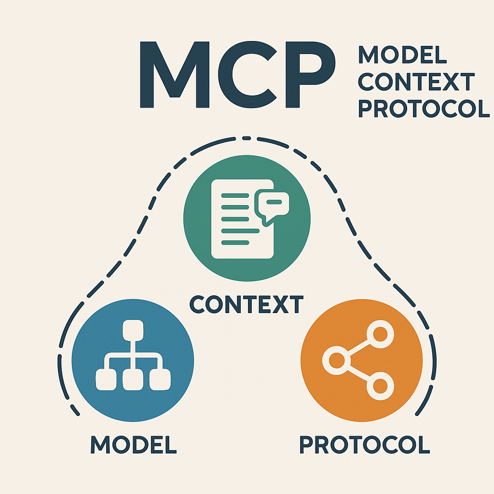
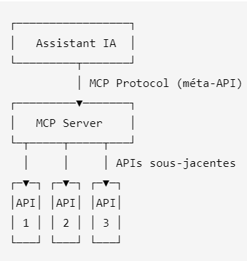
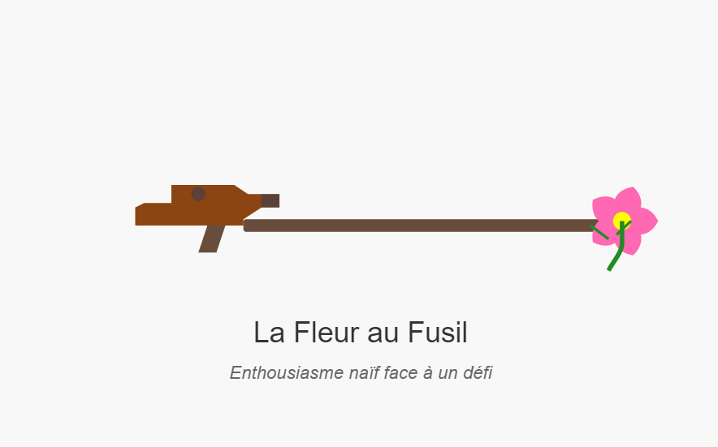

Newsletter Portfolio
23/05/2025
Découvrez mes derniers projets et réalisations dans cette newsletter hebdomadaire.
Récits visuels, horizons numériques :
Chaque newsletter, un voyage entre données, créativité et découvertes

LLM function calls don't scale; code orchestration is simpler, more effective de Jiquan Ngiam

MCP = Méta-API ?
{kind=link}

L'information obligée d'être créative

Implémentation de la stratégie COPE (Create Once, Publish Everywhere) par un système d’automatisation LinkedIn

Architecture Modulaire à Base de Contenu

Méréologie comme cadre d'analyse
LLM function calls don't scale; code orchestration is simpler, more effective de Jiquan Ngiam
Un article très intéressant sur l'orchestration avec MCP et des propositions pour accélérer les performances : séparer l'orchestration des appels de fonctions.
On pourrai résumer cela par :
Problème actuel :
ascii
Tool Call → Large JSON → LLM → Processing → Output
Sa solution : séparer les responsabilités
ascii
LLM → Code Orchestration → Data Processing → Results
Donc là encore on sépare le fond de la forme : la structure se distingue de la logique.
Son expérience métier rend cet article pertinent et direct ce qui le rend accessible aux néophytes que nous sommes.
LLM function calls don't scale; code orchestration is simpler, more effective de Jiquan NGIAM" publié le 20 mai 2025 présent aussi sur LinkedIn.
Retour en hautMCP = Méta-API ?
1.Model Context Protocol (MCP)
Rappel de ce qu'est MCP : un protocole de communication unificateur qui standardise le chaos des API !! 😉
Alors oui, on peut dire que MCP est une méta-API dans le sens où ce protocole standardise les échanges de données entre API.
2.MCP, une méta-API spécialisée pour l'IA
Voilà tout le changement d'échelle, puisque ce sont les modèles IA qui orchestrent dans cet ecosystème.
Requête classique
ascii
Humain → Une demande → Une réponse
Orchestration MCP
ascii
Humain → Intention complexe → IA → Multiple tools → Synthèse
...Mais je vous vois déjà vous demander ce qu'est une intention complexe? Prenons un exemple concret sur cette notion qui nous semble centrale.
Une intention complexe se formulerait sous la forme d'une question de ce type : "Comment on peut améliorer notre productivité ?" (...oui je cherche 😜)
L'IA va alors décomposer "le problème" :
- Analyser les métriques actuelles
- Identifier les goulots d'étranglement
- Comparer avec les standards du secteur
- Proposer des solutions adaptées au contexte
Donc "l'intention complexe" est bien plus qu'une demande humaine naturelle, en réalité, elle cache un besoin d'orchestration multi-services pour donner une réponse complète et contextualisée que doit pouvoir apporter l'IA.
...pas mal.
Retour en hautL'information obligée d'être créative
1. La créativité en information : une réponse à la crise du journalisme
L'expression sonne un peu étrange mais cette recherche de réinvention, face aussi à des problèmes d'enjeux démocratiques, nous conduit tous à être entre l'admiration et l'ironie mordante comme le titrait récemment le Wall Street Journal, de cette manière, en parlant de cet entrepreneur Jeremy Gulban : "He Wanted to Fix Local News. It's Harder Than He Thought." (article du 30/03/25)
... sans blague ?
Mais il faut admettre que Monsieur GULBAN est audacieux.
Au début, j'ai cru que c'était un revival hippy mais pas du tout, cet entretien avec le journaliste Mark CARO permet justement de présenter sa démarche et ses enjeux : rendre l'information accessible en promouvant une alternative citoyenne.
Et à la lecture de son projet, je reconnais qu'il mène admirablement son défi : créer un réseau national de journaux communataires aux Etats-Unis.
Cette entreprise est vraiment intéressante car elle l'a obligé à repenser le modèle classique du format presse papier selon les contraintes actuelles (essor du numérique, baisse de la lecture etc.), en tentant maintenant d'en proposer un modèle économique.
Il fallait oser, à l'heure où se plaindre des médias est tellement évident mais sans rien amener ; son idée a le mérite d'ouvrir sur des actions concrètes pour sortir de cette crise.
2. De nouvelles formes de régulation de l'information
Cette segmentation du Web devient finalement de plus en plus visible, avec des formes de régulation du trafic selon des échelles territoriales marquées.
On voit bien des réseaux sociaux décentralisés prendre place dans le paysage numérique. Je pense au réseau social Mastodon car le plus connu.
Beaucoup préfèrent parler de fragmentation du web pour aborder finalement les politiques qui luttent entre national et global.
Toutes ces luttes sont légitimes et démontrent une certaine volonté à exister.
Retour en hautImplémentation de la stratégie COPE (Create Once, Publish Everywhere) par un système d’automatisation LinkedIn
Lire l'article entier sur le blog ARCHNUM
Retour en hautArchitecture Modulaire à Base de Contenu
Architecture Modulaire à Base de Contenu
L'Architecture Modulaire à Base de Contenu (ou "Content-Driven Modular Architecture") représente une approche moderne et flexible pour concevoir des sites web et des applications. Cette méthodologie place le contenu au centre du processus de développement, en le séparant strictement de la présentation.
Mots-clés: développement, architecture, contentdriven, méthodologie, applications
Principes fondamentaux
Cette architecture repose sur plusieurs principes clés qui la rendent particulièrement efficace pour les sites riches en contenu comme les portfolios et les blogs :
Mots-clés: architecture, portfolios, principes, plusieurs
Le contenu est stocké dans des fichiers indépendants (souvent au format Markdown) avec des métadonnées standardisées (frontmatter), complètement séparés du code HTML, CSS et JavaScript qui définit leur présentation. Cette séparation permet à chaque aspect d'évoluer indépendamment.
Mots-clés: standardisées, indépendance, présentation
Les sections et composants peuvent être facilement réutilisés, réorganisés ou recombinés pour créer de nouvelles pages ou expériences. Cette flexibilité permet d'assembler rapidement différentes vues à partir des mêmes éléments de base.
Mots-clés: expériences, réorganisation, flexibilité
Modifier un contenu n'exige pas de toucher au code HTML principal. Les rédacteurs de contenu peuvent se concentrer uniquement sur les fichiers Markdown pertinents, sans risquer d'altérer la structure ou le fonctionnement du site.
Mots-clés: fonctionnement, pertinents, concentrer, uniquement, rédacteurs
Ajouter une nouvelle section est aussi simple que de créer un nouveau fichier Markdown. Cette approche réduit considérablement la friction pour enrichir le site avec de nouveaux contenus.
Mots-clés: contenus
Implémentation pratique
Pour les composants simples, le Markdown pur suffit généralement. Cependant, pour les composants plus complexes comme les grilles de compétences, les cartes de services, ou les processus multi-étapes, l'HTML embarqué dans Markdown offre le meilleur compromis :
Cette approche hybride permet de préserver le rendu visuel des composants complexes tout en profitant pleinement de la modularité du système.
Mots-clés: multiétapes, compétences, composants, markdown, modularité, composants, complexes
Avantages à long terme
Au-delà des bénéfices immédiats, cette architecture offre des avantages substantiels sur le long terme :
- Transitions technologiques facilitées - Le contenu peut être conservé même si le framework ou la technologie de présentation change
- Versionning efficace - Les modifications de contenu sont clairement visibles dans les commits Git
- Possibilités de migration accrues - Le contenu peut être facilement exporté vers d'autres systèmes
- Optimisation du workflow - Les designers et développeurs peuvent travailler sur l'interface pendant que les rédacteurs créent le contenu
Cette architecture représente une évolution naturelle des systèmes de gestion de contenu traditionnels, offrant davantage de flexibilité tout en conservant une structure claire et organisée.
Mots-clés: architecture, flexibilité
1. Séparation du contenu et de la présentation
Le contenu est stocké dans des fichiers indépendants (souvent au format Markdown) avec des métadonnées standardisées (frontmatter), complètement séparés du code HTML, CSS et JavaScript qui définit leur présentation. Cette séparation permet à chaque aspect d'évoluer indépendamment.
Mots-clés: indépendance, standardisés, présentation
2. Composabilité
Les sections et composants peuvent être facilement réutilisés, réorganisés ou recombinés pour créer de nouvelles pages ou expériences. Cette flexibilité permet d'assembler rapidement différentes vues à partir des mêmes éléments de base.
Mots-clés: flexibilité
3. Maintenabilité
Modifier un contenu n'exige pas de toucher au code HTML principal. Les rédacteurs de contenu peuvent se concentrer uniquement sur les fichiers Markdown pertinents, sans risquer d'altérer la structure ou le fonctionnement du site.
Mots-clés: pertinents, rédacteurs
4. Évolutivité
Ajouter une nouvelle section est aussi simple que de créer un nouveau fichier Markdown. Cette approche réduit considérablement la friction pour enrichir le site avec de nouveaux contenus.
Mots-clés: enrichir, contenus
Retour en hautMéréologie comme cadre d'analyse
Demande de prompt : définition et applications de la méréologie
Origines et définition
La méréologie, théorie formelle des relations entre les parties et le tout, trouve ses racines dans les travaux du philosophe et logicien polonais Stanisław Leśniewski, qui développa cette approche dans les années 1910-1920. Cependant, l'étude des relations partie-tout était déjà présente dans la pensée d'Aristote et a été explorée plus tard par des philosophes comme Edmund Husserl dans ses "Recherches logiques" (1900-1901) et Alfred North Whitehead.
D'autres contributions significatives incluent les travaux de Peter Simons ("Parts: A Study in Ontology", 1987) et Nelson Goodman ("The Structure of Appearance", 1951), qui ont étendu et formalisé davantage cette théorie logique.
Applications dans l'analyse culturelle
Dans le domaine de l'analyse culturelle, l'approche méréologique offre un cadre conceptuel permettant d'examiner comment les éléments culturels fonctionnent simultanément comme entités autonomes et comme composantes de systèmes plus larges. Cette perspective s'avère particulièrement utile pour comprendre:
- Les relations entre pratiques culturelles individuelles et systèmes globaux
- L'intégration des sous-cultures dans des cultures plus étendues
- La manière dont les artefacts culturels acquièrent des significations différentes selon les contextes
Ce cadre théorique permet d'analyser efficacement les processus d'hybridation culturelle en montrant comment des éléments issus de différents ensembles peuvent être recombinés pour former de nouvelles totalités culturelles.
La méréologie en linguistique cognitive
La linguistique cognitive utilise la méréologie pour étudier comment nous conceptualisons et exprimons les relations partie-tout dans le langage. On peut distinguer plusieurs types de relations méréologiques dans les expressions linguistiques:
- Relations partie-objet physique: "le toit de la maison", "la poignée de la porte"
- Relations membre-collection: "un joueur de l'équipe", "une carte du jeu"
- Relations portion-masse: "une tranche de pain", "une goutte d'eau"
Ces expressions reflètent notre conceptualisation cognitive des ensembles et peuvent varier considérablement d'une langue à l'autre, certaines utilisant des classificateurs spécifiques ou des constructions grammaticales distinctes.
Applications en ontologie informatique
Dans le domaine de l'informatique, la méréologie est fondamentale pour la construction d'ontologies comme SNOMED CT (Systematized Nomenclature of Medicine -- Clinical Terms), l'une des plus importantes ontologies médicales. Les relations méréologiques y sont utilisées pour:
- Structurer hiérarchiquement les concepts médicaux
- Faciliter le raisonnement automatique
- Permettre des requêtes complexes dans les dossiers médicaux électroniques
Par exemple, l'ontologie établit des relations comme "le ventricule gauche est une partie du cœur" ou "la fièvre est une partie du syndrome grippal", fournissant ainsi une base pour l'inférence automatisée.
Analyse méréologique des archives visuelles
L'application de la méréologie à l'analyse des archives visuelles constitue un domaine particulièrement innovant. Cette approche permet d'étudier:
-
La relation entre l'image individuelle et la collection: Une image isolée possède sa propre signification, mais acquiert des dimensions supplémentaires lorsqu'elle est mise en relation avec d'autres images.
-
Les sous-ensembles significatifs: Comment certains groupements d'images constituent des "parties" cohérentes qui transmettent un message spécifique au sein de l'ensemble plus large.
-
Les éléments visuels récurrents: La façon dont certains motifs deviennent des unités méréologiques structurant la collection.
Le raisonnement métavisuel
Le raisonnement métavisuel, qui consiste à analyser les relations entre les images au-delà de leur contenu individuel, s'appuie sur plusieurs opérations:
- Catégorisation: Identifier les principes d'organisation des images
- Contextualisation: Replacer chaque image dans son rapport aux autres
- Abstraction: Dégager des motifs invisibles au niveau de l'image individuelle
Opérations rhétoriques dans l'analyse scientifique des archives visuelles
Pour produire des informations scientifiques à partir d'une collection d'images, plusieurs opérations rhétoriques sont employées:
- Juxtaposition: Révéler des similarités ou différences par la mise en parallèle
- Série et séquence: Organiser les images pour dégager des tendances ou ruptures
- Synecdoque visuelle: Utiliser certaines images comme représentatives d'ensembles plus larges
- Métaphore structurelle: Employer des structures conceptuelles pour représenter les relations entre images
- Échantillonnage représentatif: Sélectionner des sous-ensembles reflétant les propriétés de la collection entière
Ces opérations transforment une accumulation d'images en un corpus structuré produisant des connaissances scientifiques sur les phénomènes visuels, les pratiques culturelles ou les évolutions historiques qu'elles documentent.
Conclusion
La méréologie, née dans le domaine de la logique formelle, s'est révélée être un cadre conceptuel exceptionnellement fertile pour diverses disciplines. Son application à l'analyse culturelle, à la linguistique cognitive, à l'ontologie informatique et particulièrement à l'étude des archives visuelles démontre sa puissance pour comprendre les relations complexes entre les parties et les ensembles dans de multiples domaines de la connaissance.
En offrant une méthodologie pour analyser comment les significations émergent non seulement des éléments individuels mais aussi de leurs interactions, la méréologie constitue un outil précieux pour la recherche contemporaine dans les sciences humaines et sociales, ainsi que dans le domaine des technologies de l'information.
contenu généré par une IA générative
Retour en haut